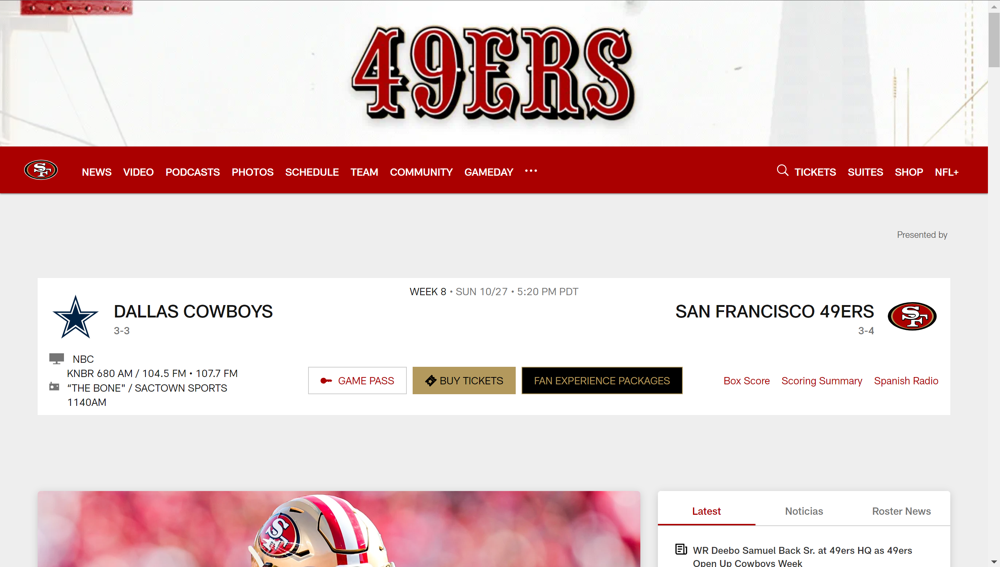

Website URL: https://www.49ers.com
Website Name: 49ers.com
Target Audience: The target audience for this website is fans of the San Francisco 49ers football team. However, it is also for journalists and football enthusiasts looking for the latest news on the team. The news this site provides ranges from player trades, injury updates, upcoming opponents, and more.
The website is organized in a very user-friendly manner. The main navigation bar allows users to access news, videos, podcasts, photos, schedule, team information, and more. This layout is easy to follow since each section is labeled clearly and is easy to navigate through.
Alignment: The website contains good alignment since all of the elements are placed in an organized and neat manner. An example of this is how the navigation bar is always placed at the top of the screen even when scrolling down the page which allows for quick navigation through the site no matter where you are at the page. The content selection is also neatly aligned, leading to a very balanced and easy to maneuver website.
When putting the site into the accessibility checker tool, the site was given a score of 64. An issue that was identified by the accessibility checker was insufficient color contrast in foreground and background elements. This problem can affect users that have colorblindness by making it hard to read the content.
The website is effective for supporting users to complete tasks such as finding team news, purchasing tickets, and watching videos. The structure is clear which means that tasks can be completed without any confusion.
The site is efficient because it allows users to perform tasks like navigating to game schedules or purchasing team gear quickly due to its clear and simple structure and navigation.
The 49ers.com website is very engaging, with visually appealing design elements, an easy to navigate layout, and interactive media like videos and photos. It aligns well with its purpose of keeping fans updated on team news and events.
One recommendation to improve the website would be to address the issue of color contrast to enhance readability for all users.
Below is a screenshot of the 49ers.com homepage demonstrating the layout and design:
